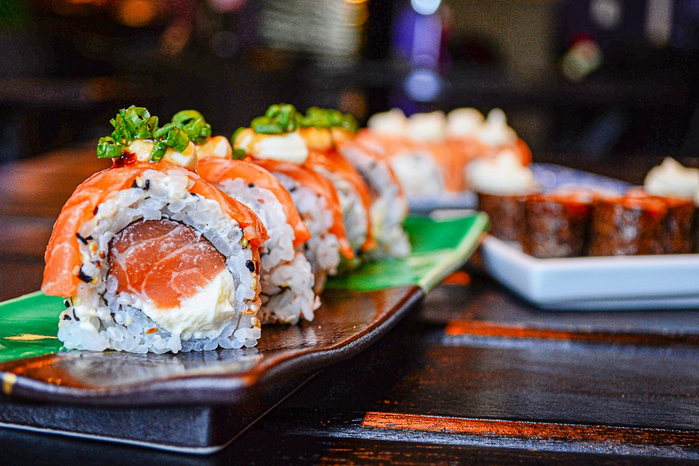

Address & Counter
Hasaki Grill & Sushi
440 S. Church St.
Charlotte, NC 28202
Ground floor retail in the Ally Center
We are located in the heart of Uptown Charlotte in the Ally Center, directly across from Romare Bearden Park and steps from Truist Field and Bank of America Stadium.

Everything you need for dining in or picking up your fresh hibachi and sushi.
Hasaki Grill & Sushi
440 S. Church St.
Charlotte, NC 28202
Ground floor retail in the Ally Center
Monday – Friday:
11:00 AM – 8:30 PM (Lunch & Dinner)
Saturday: 12:00 PM – 8:30 PM
Sunday: Closed
Phone: (704) 376-7888
Call ahead for immediate lunch pickup, corporate bento box orders, or gameday takeout.